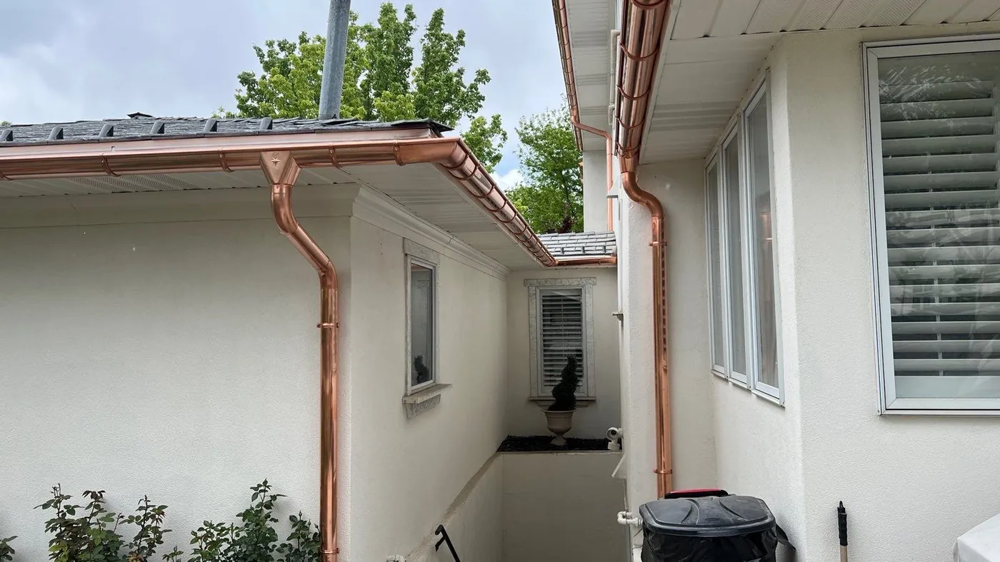
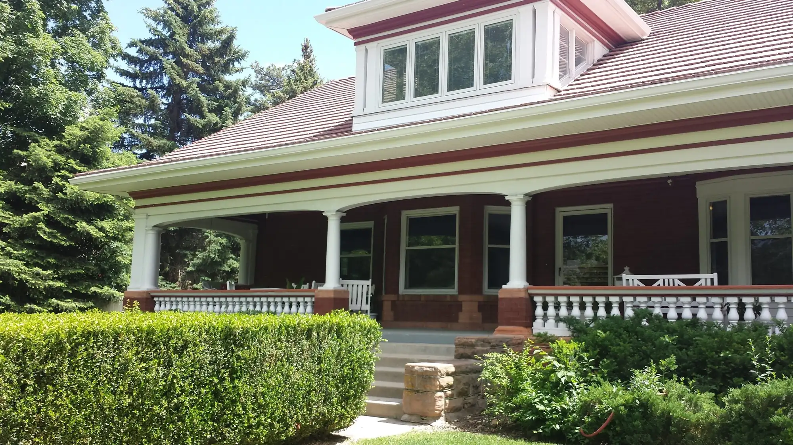

Blog
Blog
160 articles from M&M Gutters & Exteriors on gutters, leaf guards, heat cable, roofing, siding and windows for Utah homes.

New guide
5-Inch vs. 6-Inch Gutters: Which Size Does Your Home Need?
How to size gutters for a Salt Lake City roof, using NOAA’s local rainfall data and the standard sizing method.
Read the guide34
Gutters
- Rain Gutter Install Cost: Smart 2026 Guide2026-09-15
- What’s the Damage? Estimating Your Rain Gutter Installation Cost2026-09-08
- Breathable and Beautiful: A Guide to New Gutters and Soffits2026-05-14
- How Much Should You Really Pay for New Gutters2026-03-20
- Why Galvanised Gutters Are the Toughest Kids on the Block2026-03-20
- How to Clean Gutters: The Complete DIY Guide2026-01-05
- What are Rain Gutters Made Of? A Complete Material Guide2025-05-08
- Why FRP Rainwater Gutters Are the Unsung Heroes of Building Drainage2024-03-10
- Buyer’s Guide: Best Gutter Installers in Salt Lake City2024-02-21
- Your Local Gutter Treasure Hunt: Finding PVC, Vinyl, 20ft Gutters, and More2024-02-17
- Don’t Get Drenched: The Top Rain Gutter Supply Companies for Your Home2024-02-07
- Avoiding Gutter Installation Mistakes2023-11-20
- Guide to Preventing Leakage During Utah Rainy Season2023-11-20
- How Do You Divert Rain Without Gutters?2023-02-15
- Can You Grow Strawberries in Your Rain Gutters?2023-01-18
- Home Improvement: What is the Average Cost of Rain Gutters?2022-09-21
- Which Kind of Rain Gutter Is Best for Your Home?2022-07-13
- Types of Rain Gutters2022-04-13
- How Long Do Rain Gutters Last?2022-03-16
- Tips for Maintaining Your Gutter System2022-01-19
- 5 Signs Your Home Needs a New Gutter System2021-07-14
- 3 Common Reasons Your Gutter System Is Leaking2021-05-19
- Are Rain Gutters Necessary?2021-04-14
- Why Gutter Repairs Should Be Left to the Pros2020-11-18
- How to Build Rain Gutter Planters2020-07-15
- How Do Gutters Protect Your Home?2020-05-13
- Vinyl vs. Aluminum Gutters: Which One Is Best2020-03-03
- How To Unclog A Rain Gutter2019-11-26
- Do Not Install Rain Gutters Yourself2019-08-14
- Why Are Rain Gutters Important?2019-07-15
- What are Seamless Rain Gutters?2019-03-05
- The Importance of Cleaning Your Rain Gutters2018-10-18
- Different Types of Rain Gutters2018-09-11
- Clean Your Gutters Is Absolutely Necessary2018-05-20
24
Leaf guards
- Leaf Guard Pricing Guide: Ultimate Cost Breakdown2026-08-31
- Leaf Guard Utah Reviews: Ultimate Home Protection2026-08-25
- Leaf Guard Reviews Consumer Reports: Shocking Truth2026-08-17
- Leaf Guard Warranty: Ultimate Home Protection Guide2026-08-10
- Cost of Leaf Guards: Shocking Truth Revealed2026-08-03
- Leaf Guard Phone Number Directory 20262026-07-28
- How Much Do Home Depot Gutter Guards Really Cost2026-05-02
- Don’t Get Fooled: Uncovering the Best Leaf Filter Systems2026-04-16
- Which Home Depot Gutter Guards Actually Work2026-03-26
- Is Leaf Guard a Scam or a Solution?2024-03-18
- Clog-Free Living: Top Gutter Guard Solutions in Salt Lake City2024-03-12
- Don’t Get Drenched: Finding Your Perfect Gutter Guard Match Nearby2024-03-03
- Seamless Protection: The Ins and Outs of Professional Gutter Guard Installation2024-02-19
- Are Gutter Guards Worth the Investment? Unpacking the Price Tag2024-02-11
- Do You Still Need to Clean Rain Gutters with Leaf Guards?2022-12-21
- What are the Pros of Leaf Gutters & Cons of Leaf Guards?2022-10-19
- Can Leaf Guards Install Onto Existing Gutters2022-05-18
- Install a Leaf Guard System Now!2021-10-13
- What Are the Best Leaf Guards for Gutters?2020-10-14
- Do Gutter Leaf Guards Work?2020-06-17
- How Are Leaf Guards Installed?2019-10-23
- Is a Leaf Guard Worth It?2019-05-09
- How to Clean a Leaf Guard2018-08-22
- Leaf Guards 1012018-06-19
23
Heat cable & ice
- Gutter Greatness on a Budget: Finding the Right Rainwater Gutter Price for You2026-09-29
- Composite Frame Windows Utah: Top Durable Choice2026-07-13
- Metal Roof Heat Tape Guide2026-05-16
- The Ultimate Guide to Gutter Ice Prevention and Safety2026-05-08
- How Much Does Fascia Repair Cost? 2026 Price Ranges (Utah)2026-04-20
- Roof Heat Tape Installation 1012026-04-11
- Stop the Ice Age with These Top Rain Gutter Heating Systems2026-04-02
- Roof Heat Cable Installation: DIY vs. Hiring a Pro—Which Is Right for You?2025-12-30
- Steps and Considerations for Installing Roof Heat Tape2024-09-26
- Measure Twice, Order Once: Your Guide to Perfect Replacement Window Sizing2024-03-14
- Felt vs. Synthetic: Is 30 Pound Felt Still the Right Choice for Your Roof?2024-03-07
- Plain UPVC Fascia Boards: Colors, Styles, and Why They’re a Smart Choice2024-02-28
- Measure Twice, Screen Once: A Foolproof Method for Replacement Screens2024-02-13
- From Single Pane to Low-E: Decoding Your Window Glass Choices2024-01-24
- Are Heating Roof Cables a Necessary For Your Utah Home?2023-11-20
- Preventing Roof Damage During Utah Winters2023-08-10
- How Does an Ice Melting System Work2021-11-17
- The Best Time To Install an Ice Melting System2021-09-15
- How To Prevent Ice Dams2021-03-17
- Rain Gutters: Spring Cleaning After Winter2020-04-08
- What Is the Best Ice Melting System?2020-01-15
- What is an Ice Melting System?2019-09-24
- Why You Should Invest in an Ice Melting System2018-11-21
25
Roofing
- Catching Every Drop: How to Master Your Roof’s Rainwater Gutter System2026-10-06
- Nail Pops and Cupping: A Weber County Homeowner’s Guide to Roof Issues2026-05-06
- The Real Cost Difference Between Architectural Shingles and Metal2026-05-04
- From Roof to Drain: How PVC Rainwater Gutters Keep Your Home Dry2026-04-18
- 90 Pound Felt: Underlayment or Standalone? A Complete Breakdown2026-04-14
- The Homeowner’s Guide to Roof Decking and Fascia Replacement2026-03-31
- The Ultimate Comparison of Architectural Shingles and Metal Roofs2026-03-28
- How To Clean Roof Shingles in Utah2025-07-04
- 12 Signs You Need a New Roof for Your Home2025-07-03
- Pros and Cons of Metal Roofing for Your Home2025-07-03
- Pros and Cons of a Flat Roof in Utah2025-07-03
- Does Home Insurance Cover Roof Replacement?2025-07-01
- Can You Have a Metal Roof on a Home in Utah?2024-04-17
- What Is the Lifespan of a Flat Roof in Utah?2024-04-17
- Beyond the Basics: A Deep Dive into 40 Pound Roofing Felt2024-03-16
- The Great Debate: 15 lb Felt vs. Its Heavier Cousins – What You Need to Know2024-02-26
- Choosing Your Felt A Deep Dive into ASTM D226 Type 1 and Type 22024-02-14
- What is ASTM D226? A Comprehensive Look at Roofing Felt Standards2024-02-05
- How to Find and Prevent Roof Leaks2023-11-20
- Metal Roof vs. Shingles: What’s the Difference?2023-11-20
- Types of Roofing Materials & Best Options for Your Home2023-11-20
- What Is Roofing Felt and What Is Its Purpose?2023-11-20
- Common Causes of Roof Leaks in Salt Lake City2023-08-10
- How Long Does a Roof Last in Utah?2023-08-10
- Roof Replacement Cost & Roof Care in Utah2023-08-10
03
Soffit & fascia
20
Siding & stucco
- Color Me Impressed: A Pro’s Guide to Matching Stucco and Siding2026-04-24
- Best Siding for Utah Homes2023-08-08
- Best Siding for Cold Climates2023-08-07
- Exterior Siding: What Is the Easiest Siding To Install?2022-11-17
- Siding Maintenance: How To Remove Mold From Your Siding?2022-08-17
- Painting Your Wood Siding Yourself: Good Idea or Bad Idea?2022-06-15
- 3 Ways To Extend the Life of Your Home’s Siding2022-02-16
- 5 Signs It’s Time To Replace Your Siding2021-12-15
- 5 Reasons To Fix Your Damaged Siding Now2021-06-16
- Which Is Better: Wood or Vinyl Siding?2020-12-16
- Which Is Better: Wood or Vinyl Siding?2020-09-16
- How To Prepare Your Siding & Gutters for Fall2020-08-19
- Can You Paint Vinyl Siding?2020-02-04
- Various Siding Options for Your Home2019-12-17
- The Pros of Wood Siding2019-06-12
- How To Properly Clean Vinyl Siding2019-04-09
- How To Care For Wood Siding2019-04-02
- Wood Siding Maintenance Tips2019-02-01
- How To Clean and Care For Your Wood Siding2019-01-04
- How To Maintain and Care for Your Vinyl Siding2018-07-20
25
Windows & doors
- How to Size Up Your Window Rough Opening Without Making Costly Mistakes2026-10-13
- Window Replacement Utah: Ultimate 2026 Guide2026-07-21
- Black Frame Window Utah: Top 2026 Trend2026-07-07
- How to Measure Aluminum Windows for Replacement: 5 Essential Tips2026-06-30
- How to Measure Vinyl Replacement Windows: 5 Essential Tips2026-06-22
- How to Measure a Windows for Replacement: 5 Essential Steps2026-06-16
- Arc de Triomphe: Measuring Your Arch Window for Replacement2026-06-09
- Curvy Windows, Perfect Fit: Measuring for Bay and Bow Replacements2026-06-02
- Don’t Get Sashed: Your Guide to Measuring for Replacement Window Sashes2026-05-26
- Keep Bugs Out: Accurately Measuring for Replacement Window Screens2026-04-30
- Utah’s Modern Window Replacement Guide: For Homes That Want to Look Sharp2026-04-22
- Fiberglass Windows vs. Vinyl: Shattering the Myths of Window Durability2026-04-07
- Crystal Clear Measurements: Your Guide to Replacing Window Glass2026-03-24
- The Best Windows for Your Utah Home2025-07-20
- 11 Signs You Need New Windows for Your Home2025-07-01
- How to Measure for Replacement Windows in 6 Easy Steps2025-05-05
- Don’t Get Bricked Up: How to Accurately Measure Windows in a Brick House2024-03-05
- Measuring Up: How to Get Perfect Window Dimensions Every Time2024-02-24
- Different Window Types & Styles for Your Home2024-02-20
- The Double-Hung Window Measurement Handbook: No More Guesswork!2024-02-03
- Basement Brilliance: Installing Your Hopper Windows Like a Pro2024-02-02
- Don’t Get Paned: How to Find the Best Window Installation Near Me2024-02-02
- Beyond the Threshold: Finding Your Perfect Glass Door Style2024-01-31
- Beyond the Pane: Your Guide to Purchasing Stained Glass Windows2024-01-29
- Demystifying Frosted Glass: Your Guide to Privacy and Light2024-01-27
05
Home maintenance

Free quote · Mon–Fri 8am–5pm
Quote your next project
Tell us about your gutters, roof or siding. We’ll come out, measure and give you a free quote.